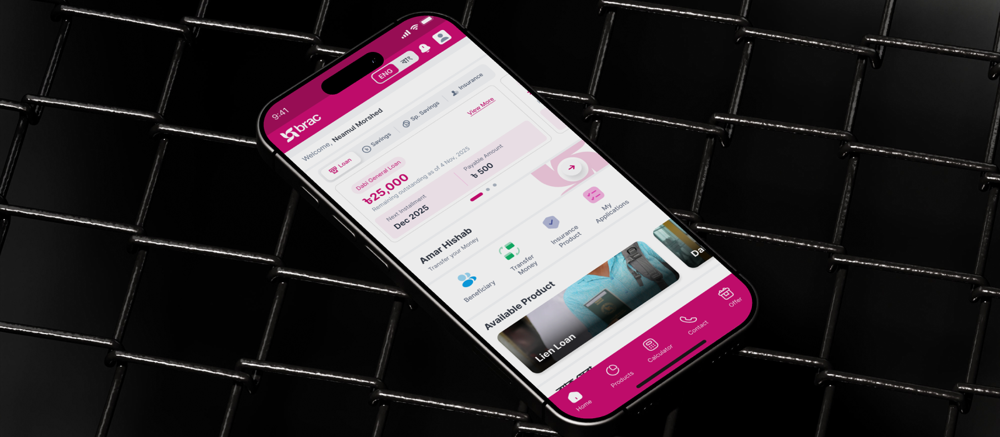
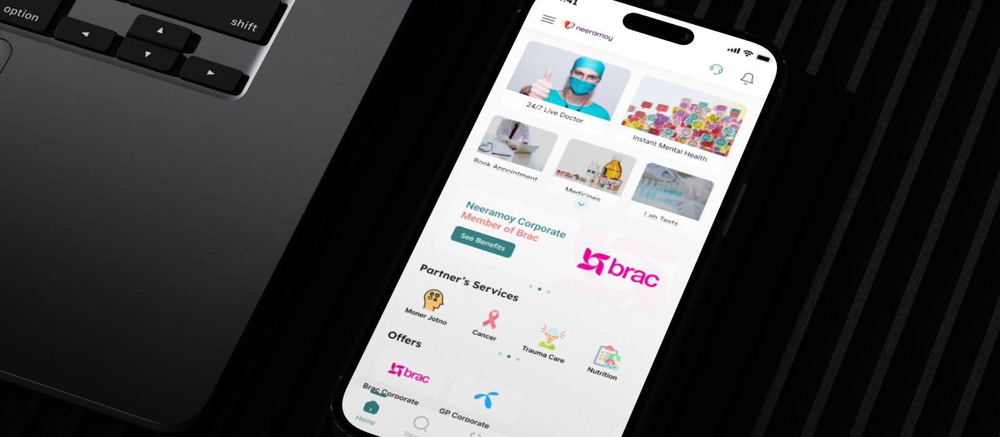
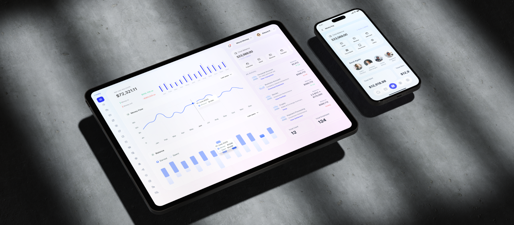
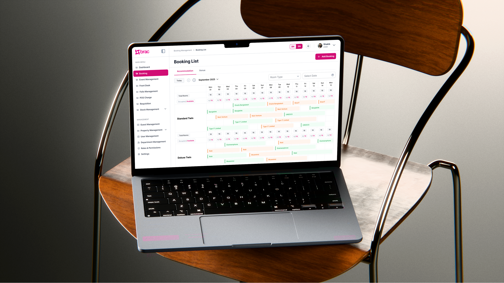
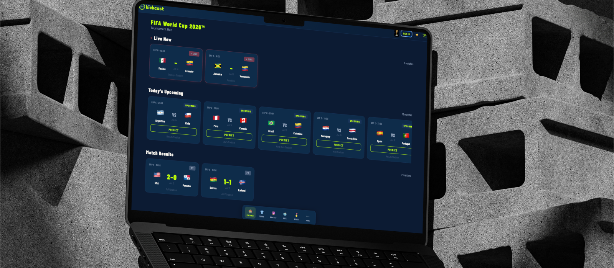

Things I've designed
Agami

Scaled a microfinance platform serving rural field officers and borrowers — redesigning core flows across Survey, Guidance, Digital Passbook, QR Code, and Instant DPS to reduce training time and increase daily active usage across a low-digital-literacy user base.
Neeramoy

Designed an end-to-end healthcare experience — connecting patients with specialists through booking, teleconsultation, and prescription management in a single unified flow.
Meely

Designed the full product and investor pitch materials for a fintech startup — translating complex financial flows into a consumer-friendly interface built for fundraising.
AMS Athlete Management System

Designed a performance and availability platform for Bangladesh Cricket Board — centralising athlete readiness, bowling workload, injury management, and squad planning into one shared source of truth.
HMS

Designed a centralized, role-based hospitality platform replacing manual spreadsheets — enabling BRAC to manage room bookings, corporate events, food services, and facilities across multiple venues without double-booking conflicts.
KickCast

Designed a football companion platform with live scores, match predictions, and fixture tracking — blending real-time data with a clean, content-first layout.
Phraseq
Designed and built an AI-native vocabulary app that teaches words through contextual usage, not definitions — featuring profession-aware sentence generation, an IELTS Band 5/7/9 rewrite engine, and a BYOK free tier model validated as a low-cost AI product launch pattern.